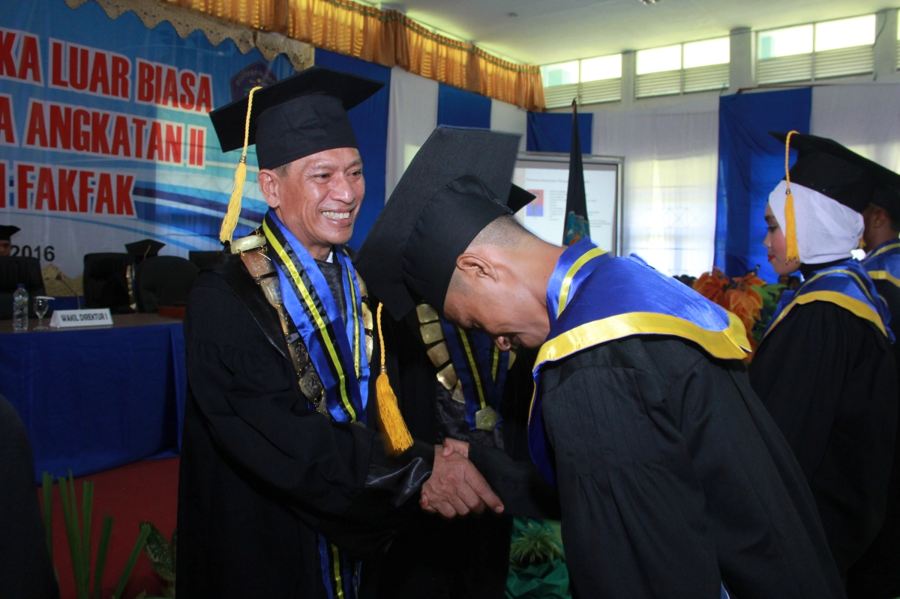
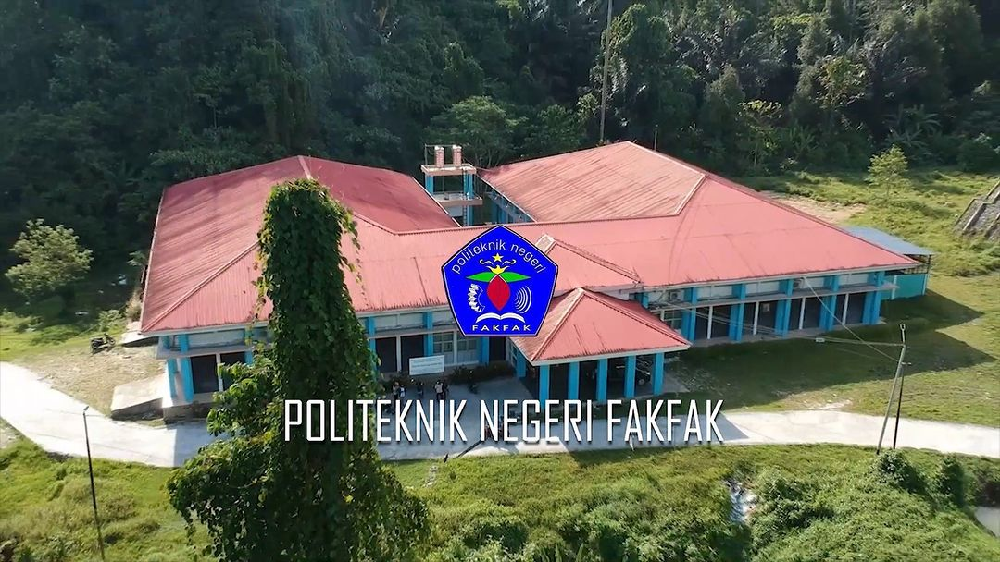
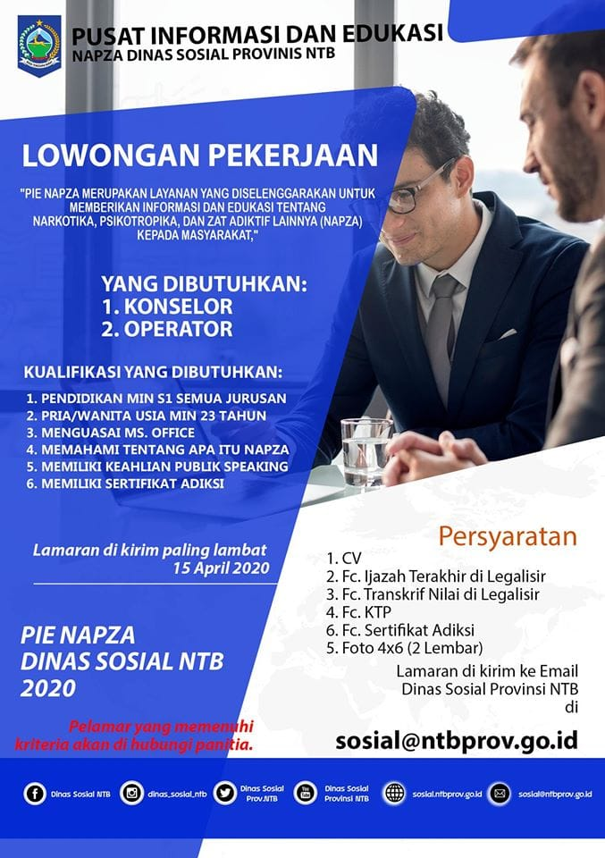

Alumni Politeknik Negeri Fakfak
Website ini didedikasikan untuk para alumni Politeknik Negeri Fakfak dari seluruh angkatan. Kami memfasilitasi pendataan dan pemantauan perkembangan alumni, serta membina komunikasi yang harmonis dan berkelanjutan antara Polinef dan alumni, menciptakan jaringan yang kuat dan saling mendukung.

Tentang Kami

Lowongan Kerja

staf TI
Universitas Informatika Dan Bisnis Indonesia (UNIBI)
Indonesia

staf Kerjasama
Universitas Informatika Dan Bisnis Indonesia (UNIBI)
Indonesia

Multi Job
SUTINDO RAYA MULIA
Indonesia

Digital Marketing Agency
BPR Arthaguna Sejahtera
Indonesia